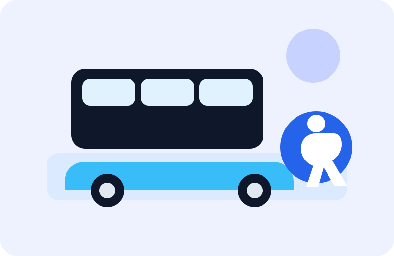

Aire acondicionado
Un ambiente cómodo durante todo el recorrido, tanto en verano como en invierno.
Comodidades, asistencia y criterios de accesibilidad para cada viaje

Además de comodidad durante el viaje, la propuesta contempla condiciones de accesibilidad para que más personas puedan utilizar el servicio de forma segura, clara y autónoma.
Un ambiente cómodo durante todo el recorrido, tanto en verano como en invierno.
Mayor comodidad para viajes diarios, traslados laborales o recorridos más extensos.
Sector destinado a bolsos, mochilas y pertenencias personales.
Personal preparado para brindar un viaje seguro, ordenado y responsable.
El recorrido cuenta con puntos de ascenso y descenso claramente organizados.
Canales de consulta para reclamos, sugerencias e información sobre el servicio.
Ruta 4 incorpora criterios de accesibilidad para mejorar la experiencia de pasajeros con movilidad reducida, discapacidad visual, discapacidad auditiva o necesidades de asistencia durante el recorrido.
Orientación del personal para acompañar el ingreso y descenso de personas con movilidad reducida.
Identificación de lugares prioritarios para personas mayores, embarazadas o pasajeros con discapacidad.
Paradas, horarios y puntos de ascenso organizados con información visible y fácil de interpretar.
Comunicación de avisos importantes mediante recursos visuales y mensajes sonoros durante el servicio.
Atención al pasajero para resolver dudas sobre paradas accesibles, horarios y condiciones del viaje.
Asistencia preferencial ante reclamos, consultas o situaciones especiales vinculadas con accesibilidad.
Si necesitás asistencia específica, se recomienda consultar previamente por los canales de contacto para confirmar disponibilidad, parada más conveniente y condiciones del servicio.
Consultar asistencia